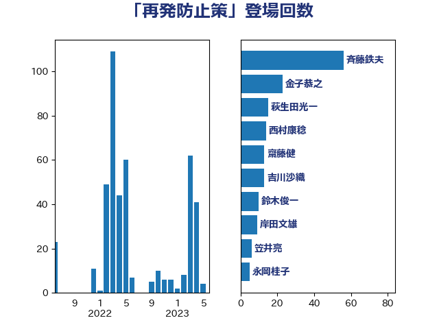

単語「再発防止策」

| 斉藤鉄夫 | 公明党 | 56 回 |
| 金子恭之 | 自由民主党 | 23 回 |
| 萩生田光一 | 自由民主党 | 15 回 |
| 西村康稔 | 自由民主党 | 14 回 |
| 齋藤健 | 自由民主党 | 13 回 |
| 吉川沙織 | 立憲民主党 | 13 回 |
| 鈴木俊一 | 自由民主党 | 10 回 |
| 岸田文雄 | 自由民主党 | 9 回 |
| 笠井亮 | 日本共産党 | 6 回 |
| 永岡桂子 | 自由民主党 | 5 回 |
| 小沢雅仁 | 立憲民主党 | 5 回 |
| 高橋千鶴子 | 日本共産党 | 4 回 |
| 野村哲郎 | 自由民主党 | 4 回 |
| 牧山ひろえ | 立憲民主党 | 4 回 |
| 渡辺猛之 | 自由民主党 | 4 回 |
| 浜田靖一 | 自由民主党 | 4 回 |
| 杉尾秀哉 | 立憲民主党 | 4 回 |
| 本村伸子 | 日本共産党 | 4 回 |
| 岩谷良平 | 日本維新の会 | 4 回 |
| 城井崇 | 立憲民主党 | 4 回 |
| 米山隆一 | 立憲民主党 | 3 回 |
| 斎藤アレックス | 国民民主党 | 3 回 |
| 後藤茂之 | 自由民主党 | 3 回 |
| 川田龍平 | 立憲民主党 | 3 回 |
| 山添拓 | 日本共産党 | 3 回 |
| 宮本徹 | 日本共産党 | 3 回 |
| 伊藤岳 | 日本共産党 | 3 回 |
| 中山展宏 | 自由民主党 | 3 回 |
| 音喜多駿 | 日本維新の会 | 2 回 |
| 荒井優 | 立憲民主党 | 2 回 |
| 羽田次郎 | 立憲民主党 | 2 回 |
| 神谷裕 | 立憲民主党 | 2 回 |
| 滝波宏文 | 自由民主党 | 2 回 |
| 浜田聡 | NHK党 | 2 回 |
| 津島淳 | 自由民主党 | 2 回 |
| 河野太郎 | 自由民主党 | 2 回 |
| 松野博一 | 自由民主党 | 2 回 |
| 松沢成文 | 日本維新の会 | 2 回 |
| 松本剛明 | 自由民主党 | 2 回 |
| 徳永エリ | 立憲民主党 | 2 回 |
| 山口那津男 | 公明党 | 2 回 |
| 小野寺五典 | 自由民主党 | 2 回 |
| 小山展弘 | 立憲民主党 | 2 回 |
| 小倉將信 | 自由民主党 | 2 回 |
| 吉川元 | 立憲民主党 | 2 回 |
| 加藤勝信 | 自由民主党 | 2 回 |
| 三上えり | 立憲民主党 | 2 回 |
| 高橋光男 | 公明党 | 1 回 |
| 高市早苗 | 自由民主党 | 1 回 |
| 階猛 | 立憲民主党 | 1 回 |
| 阿部弘樹 | 日本維新の会 | 1 回 |
| 長友慎治 | 国民民主党 | 1 回 |
| 野田聖子 | 自由民主党 | 1 回 |
| 野田国義 | 立憲民主党 | 1 回 |
| 遠藤良太 | 日本維新の会 | 1 回 |
| 道下大樹 | 立憲民主党 | 1 回 |
| 赤池誠章 | 自由民主党 | 1 回 |
| 西野太亮 | 自由民主党 | 1 回 |
| 西村智奈美 | 立憲民主党 | 1 回 |
| 若松謙維 | 公明党 | 1 回 |
| 美延映夫 | 日本維新の会 | 1 回 |
| 紙智子 | 日本共産党 | 1 回 |
| 稲津久 | 公明党 | 1 回 |
| 石橋通宏 | 立憲民主党 | 1 回 |
| 石川香織 | 立憲民主党 | 1 回 |
| 石井苗子 | 日本維新の会 | 1 回 |
| 田村貴昭 | 日本共産党 | 1 回 |
| 田嶋要 | 立憲民主党 | 1 回 |
| 田中健 | 国民民主党 | 1 回 |
| 源馬謙太郎 | 立憲民主党 | 1 回 |
| 浜口誠 | 国民民主党 | 1 回 |
| 水野素子 | 立憲民主党 | 1 回 |
| 橘慶一郎 | 自由民主党 | 1 回 |
| 榛葉賀津也 | 国民民主党 | 1 回 |
| 森本真治 | 立憲民主党 | 1 回 |
| 森山浩行 | 立憲民主党 | 1 回 |
| 柳ヶ瀬裕文 | 日本維新の会 | 1 回 |
| 東徹 | 日本維新の会 | 1 回 |
| 杉本和巳 | 日本維新の会 | 1 回 |
| 早稲田ゆき | 立憲民主党 | 1 回 |
| 早坂敦 | 日本維新の会 | 1 回 |
| 打越さく良 | 立憲民主党 | 1 回 |
| 川合孝典 | 国民民主党 | 1 回 |
| 山田美樹 | 自由民主党 | 1 回 |
| 小西洋之 | 立憲民主党 | 1 回 |
| 小宮山泰子 | 立憲民主党 | 1 回 |
| 宮本岳志 | 日本共産党 | 1 回 |
| 宮崎勝 | 公明党 | 1 回 |
| 安江伸夫 | 公明党 | 1 回 |
| 塩田博昭 | 公明党 | 1 回 |
| 塩川鉄也 | 日本共産党 | 1 回 |
| 住吉寛紀 | 日本維新の会 | 1 回 |
| 伊藤孝恵 | 国民民主党 | 1 回 |
| 中川郁子 | 自由民主党 | 1 回 |
| 中川康洋 | 公明党 | 1 回 |
| 三浦靖 | 自由民主党 | 1 回 |
| こやり隆史 | 自由民主党 | 1 回 |